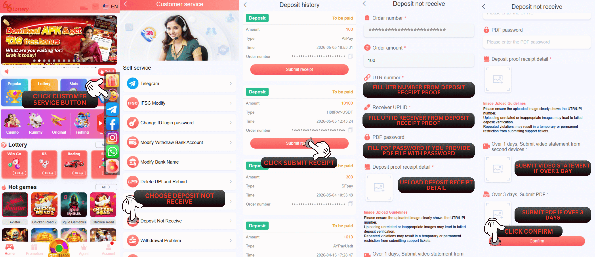
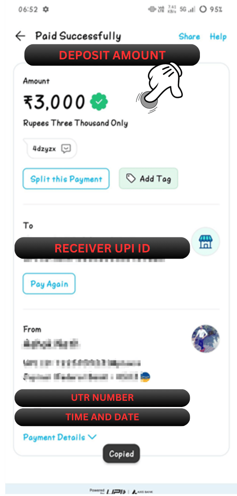

जमा प्राप्त नहीं हुआ
प्रश्न: मैं स्वयं-सेवा केंद्र 66 Lottery पर जमा राशि प्राप्त न होने की समस्या कैसे प्रस्तुत कर सकता हूँ?
उत्तर: स्वयं-सेवा केंद्र पर जमा राशि प्राप्त न करने के लिए 66 Lottery, कृपया इस चरण का पालन करें
1. आपको इस लिंक https://www.66lottery.vip/ का उपयोग करना होगा
2. लिंक डालने के बाद नोटिफिकेशन को बंद कर दें
3. इश्यू चुनें और डिपॉजिट नॉट रिसीव चुनें
4. अपना 66 Lottery ID अकाउंट भरें
5. आपके द्वारा ट्रांसफर की गई जमा राशि भरें
6. यूटीआर नंबर भरें
7. रिसीवर यूपीआई आईडी भरें
8. जमा रसीद प्रमाण स्पष्ट और विवरण संलग्न करें
9. मुद्दा सबमिट करें

प्रश्न: मैं वास्तव में यूटीआर नंबर और रिसीवर यूपीआई आईडी के बारे में नहीं समझ पा रहा हूं कि मैं इसे कहां पा सकता हूं?
उत्तर: आप इसे
का उपयोग करने वाले बैंक/वॉलेट ऐप्स पर पा सकते हैं 1. आप वह बैंक/वॉलेट ऐप खोलें जिसका उपयोग आप ट्रांसफर डिपॉजिट के लिए करते हैं
2. इतिहास लेनदेन/इनबॉक्स पर खोजें
3. स्थानांतरण का विवरण दिखाने के लिए आपके द्वारा किए गए लेनदेन को दबाएं
आप जमा रसीद प्रमाण की जांच करने के लिए स्पष्टीकरण देखने के लिए नीचे दी गई तस्वीर भी देख सकते हैं
1. जमा राशि
2. रिसीवर यूपीआई आईडी
3. यूटीआर नंबर
4. समय और दिनांक लेनदेन
इस 4 को स्पष्ट और विस्तृत रूप से दिखाने की आवश्यकता है ताकि हमारा जमा विभाग तेजी से जांच करने में मदद कर सके

स्थिति संबंधी समस्या
प्रश्न: मैं स्व-सेवा केंद्र 66 Lottery पर प्राप्त नहीं हुई जारी जमा राशि की स्थिति की जांच कैसे कर सकता हूं?
उ: आप समस्या की स्थिति देखें पर क्लिक करके समस्या की स्थिति की जांच कर सकते हैं, फिर अपना 66 Lottery आईडी खाता भरें और जमा न प्राप्त होने की समस्या का चयन करें। अंत में, खोजें पर क्लिक करें, और आपकी समस्या की स्थिति प्रदर्शित होगी।
सफलता की स्थिति
प्रश्न: मैं पहले से ही जाँच कर रहा हूँ और यहाँ स्थिति पहले से ही सफल है और वहाँ एक नोट है पास - सफलता "सफलता प्रक्रिया को UTR:xxxx के साथ अपने खाते में जमा करें" इसका क्या मतलब है?
उ: इसका मतलब है कि हमारा जमा विभाग पहले से ही आपकी जमा राशि की जांच कर रहा है और आपके 66 Lottery खाते में सफलतापूर्वक प्रक्रिया कर रहा है, आपको अपना शेष दर्ज देखने के लिए बस इसे 66 Lottery खाते पर जांचना होगा
स्थिति अस्वीकार करें
प्रश्न: अस्वीकृत स्थिति के बारे में मुझे यह जानने की आवश्यकता है कि क्या मेरी जमा राशि प्राप्त न होने की समस्या 66 Lottery जमा विभाग द्वारा अस्वीकृत कर दी गई है? उ: ठीक है निश्चिंत रहें हम आपको यह समझाने में मदद करेंगे कि कुछ नोट अस्वीकृति हैं जिन्हें आपको जानना आवश्यक है हम इस पर नीचे स्पष्टीकरण देंगे：
1. "यूटीआर नंबर गलत है, कृपया बैंक से संपर्क करें" को अस्वीकार करें: इसका मतलब है कि आपको लेनदेन के लिए उपयोग किए जाने वाले बैंक/वॉलेट ऐप्स से संपर्क करने की आवश्यकता है, यूटीआर नंबर के साथ परेशानी हो सकती है
2. अस्वीकार करें "जांच के लिए कतार में लगने पर कृपया प्रतीक्षा करें":इसका मतलब है कि जमा अभी भी 66 Lottery जमा विभाग द्वारा प्राप्त नहीं हुआ है और आपको धैर्यपूर्वक प्रतीक्षा करने की आवश्यकता है, आपको इसे बार-बार जमा करने की आवश्यकता नहीं है, हमारे विशेषज्ञ इसे रिकॉर्ड करेंगे ऑर्डर करें और अपने लिए इसका पालन करें! आप यूटीआर स्थिति की जांच करने और अपनी जमा राशि की स्थिति को समझने के लिए पुनः सबमिट करने के लिए अपने बैंक से भी परामर्श कर सकते हैं।
3. अस्वीकार करें "जमा प्रमाण स्पष्ट और पूर्ण विस्तृत प्रदान करें": इसका मतलब है कि आपके द्वारा जमा किया गया आपका जमा प्रमाण आवश्यक सभी विवरण नहीं दिखा रहा है या स्पष्ट नहीं है, आपको यह जानना होगा कि हमें आपको राशि, यूटीआर नंबर, यूपीआई आईडी रिसीवर के साथ दिखाना होगा। दिनांक और समय
4. अस्वीकार करें "आईडी खाता गलत है। सही आईडी प्रदान करें": इसका मतलब है कि फिर से सुनिश्चित करें कि आपने स्वयं सेवा केंद्र पर अपना आईडी खाता सबमिट किया है। ठीक है। क्या यह पहले से ही सही है या नहीं
5. "सही जमा प्रमाण रसीद प्रदान करें" अस्वीकार करें:कृपया फिर से जांचें कि आपकी जमा प्रमाण रसीद ही प्रमाण होनी चाहिए और प्रमाण के अलावा कोई अन्य नहीं
6. "आईडी और रसीद की जांच करें क्योंकि यह मेल नहीं खाता है" को अस्वीकार करें: इसका मतलब है कि आपको ओके.विन आईडी खाते पर जमा फॉर्म को फिर से जांचना होगा और रसीद जमा का प्रमाण यह है कि इसमें मिलान की तारीख, समय, राशि और चैनल भुगतान है। आप का उपयोग करें
7. अस्वीकार करें "ऑर्डर नंबर मेल नहीं खाता, दोबारा जांचें": इसका मतलब ठीक है। विन जमा विभाग पहले से ही आपके द्वारा सबमिट की गई आईडी पर जांच कर रहा है, उस समय आपके द्वारा सबमिट किया गया कोई फॉर्म जमा नहीं है, इसलिए हमारा विभाग यह मान रहा है कि आपकी आईडी या प्रूफ जमा जमा हो गया है गलत है और आपको पहले इसे दोबारा जांचना होगा और फिर दोबारा सबमिट करना होगा